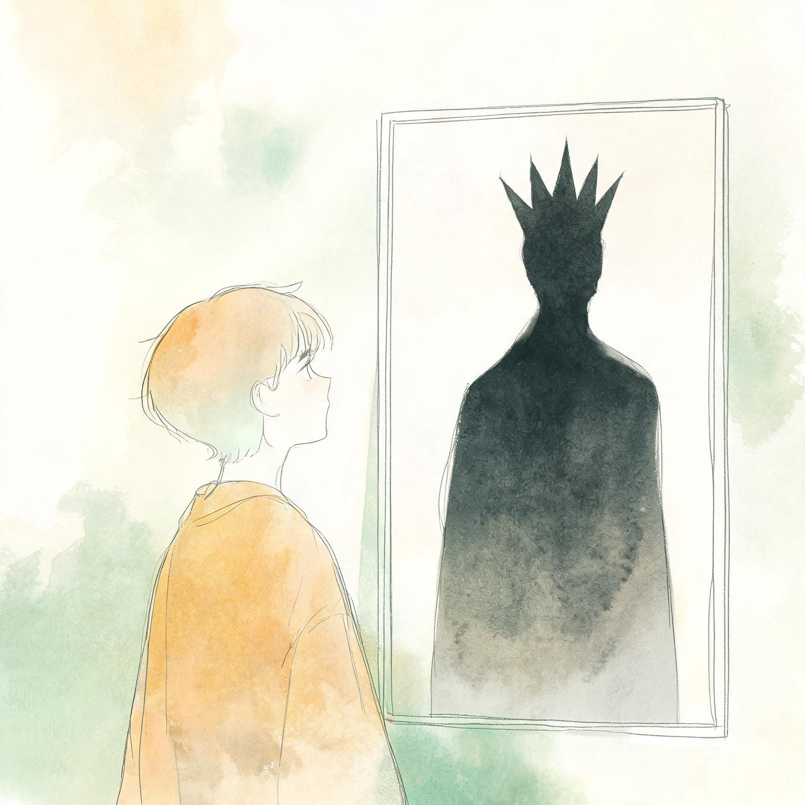
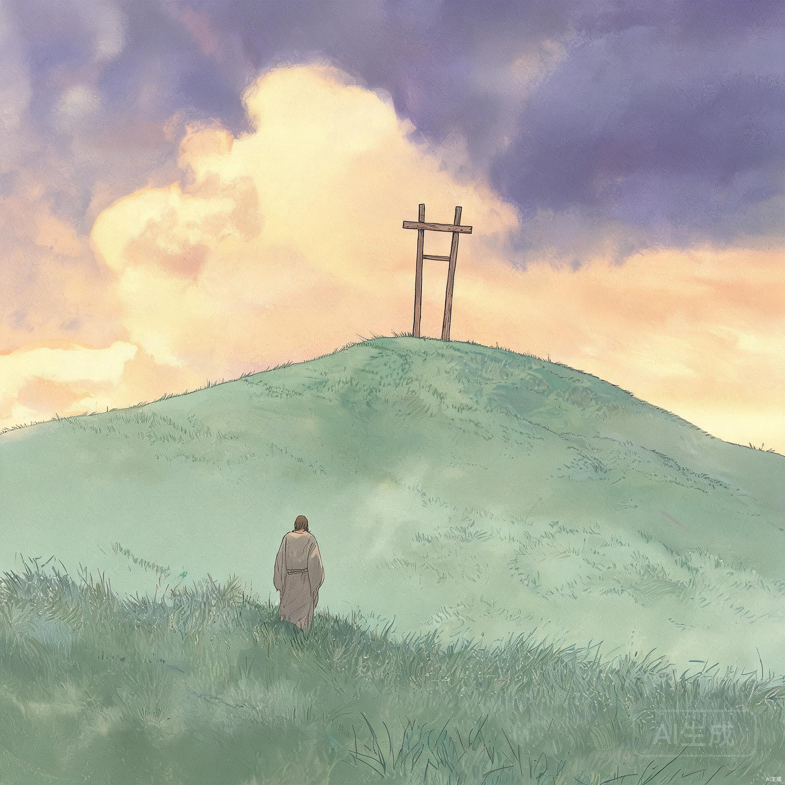

如果问你，哈曼最大的敌人是谁？很多人都会回答：末底改。因为就是这个人，不向哈曼下拜；也是因为这个人，哈曼最后走向灭亡。可如果仔细读以斯帖记，你会发现：末底改从来没有主动攻击哈曼——所以，末底改不是哈曼最大的敌人。
那哈曼为什么非要杀了末底改呢？答案藏在他心里。
你看，末底改他没有抢哈曼的位置，没有煽动百姓反对哈曼，也没有设计陷害哈曼。他只是坚持一件事——就是不向人下拜。
确切来说，真正让哈曼痛苦的，不是末底改做了什么，而是末底改没有做什么。

书中有一句话，把哈曼整个人都揭露出来了：
那时候的哈曼是谁呀？他已经拥有了很多人一辈子都得不到的东西：
✦ 位高权重，一人之下，万人之上
✦ 拥有财富、儿女、权势和名望
✦ 连王后设宴，都只邀请王和哈曼两个人
按人的标准，他已经站在人生的巅峰。可这一切，却因为一个不肯向他下拜的人，他觉得变得"毫无意义"。
为什么？因为真正控制哈曼的，从来不是末底改。而是他里面那个永远想被人高举、永远想被人尊崇的骄傲。
我们都知道，骄傲有一个特点：
✦ 它永远不会满足
✦ 今天希望十个人夸奖，明天希望一百个人称赞
✦ 今天希望别人尊重，明天又希望所有人都顺服
✦ 哪怕全世界的人都向他低头，只要还有一个人没有，他心里就不得安宁
所以，真正折磨哈曼的，不是末底改。而是他里面那个不断喊着："为什么还有人不尊重我？"
后来，哈曼甚至不是想杀末底改一个人。他要灭掉整个犹太民族。为什么？
因为当骄傲受到挑战时，罪不会停留在一点，而会不断膨胀：
明天可能就会 不惜代价毁掉别人
这就是罪的发展。骄傲一旦被喂养，它从不会自己停下来，只会越来越大，直到吞噬一切。

最讽刺的是，哈曼亲手预备了一座高高的木架。原本是为了挂末底改。
所以，家人们，毁掉哈曼的，不是末底改呀。是他里面那个一直不肯放下的骄傲。
骄傲最可怕的地方在于：它让你以为自己在对付别人，其实它一直在掏空你自己。你为别人预备的坑，最后往往成了自己的坟墓。
要知道，一个人若把自己的价值，建立在别人的认可上，他这一生就注定不会平安。
因为——
✦ 总有人不喜欢你
✦ 总有人不同意你
✦ 总有人不会按着你的期待回应你
如果我们的喜乐，需要所有人都认可；我们的平安，需要所有人都尊重；我们的价值，需要所有人为我们鼓掌——
那么我们早已把自己的心，交给了别人来掌管。
怕被忽视
一点冷落就崩塌
里面仍然安稳
价值不由人定
真正的自由，不是人人都高看你，而是即使有人不认可你，你里面仍然安稳。
因为你的价值，不是别人决定的；你的身份，也不是人的评价决定的。
所以，我们要时刻警醒。因为很多时候，真正毁掉一个人的，不是外面的仇敌，而是里面那个始终不肯降卑的心。